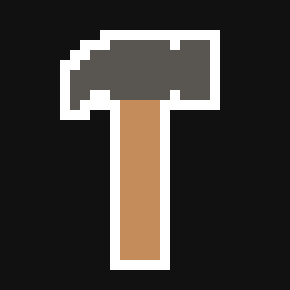

This Website
I decided to create this website to have a platform where I showcase my skills and
experiences. Additionally, I wanted to craft an interactive and visually engaging portfolio, and challenge
myself by designing and creating something from the ground up.
One of the unique aspects of this project is that I opted to not use any frameworks.
This is because I wanted to delve into the fundamentals of web development while also demonstrating my
mastery of the basics.
Collaboration played a vital role in this project's visual appeal, as I teamed up
with two talented friends, Oscar Collins and Zoey Morriss who provided me with the art used throughout
the website.
Creating this website was more than just for work purposes. It was an exercise in
creativity, percistence and self-expression.
Education
Completed my GCSEs at Simon Balle all-through school, attaining top grades,
including a 9 in physics, and 8s and 7s in other subjects. Pursued A-levels in physics, computer
science, and maths, securing A star,A,A respectively, with an additional A in further maths at AS level.
Currently in my 3rd year at the University of Leeds, studying computer science in the School of
Computer Science. Earned a 1st grade in both the first and second years. Currently focusing on
modules such as cryptography, machine learning, and computer graphics.
My goal is to achieve a bachelor's degree in computer science by June 2024.

Work
My professional journey has revolved around building a solid foundation in software
development and IT. As a tutor for GCSE students, I honed my technical expertise while guiding and
supporting them in computer science-related subjects. This role allowed me to refine my ability to
explain complex concepts effectively. Additionally, I gained valuable experience during my time at CEX,
where I demonstrated problem-solving skills and adaptability in a technology-driven retail environment.
Now, with hands-on experience in various projects and a genuine passion for technology, I am eager to
leverage my skills to contribute to impactful software development and IT initiatives, making a positive
impact in this dynamic industry.
Hobbies
My diverse range of hobbies has not only enriched my life but also sharpened valuable skills
that complement my passion for software development and IT. Participating in a Manchester hackathon opened
doors to new connections and exposed me to exciting projects from various companies. Embracing a healthy
lifestyle, I actively engage in the yoga society, nurturing both my physical and mental well-being. As a
captain of an esports team at my university, I honed my leadership and teamwork abilities while competing in
tournaments. Additionally, I find solace in music, playing both guitar and piano, which has imrpoved my
patience, discipline, and creativity. My personal software projects, crafted during my free time, demonstrate my
continuous drive to innovate and improve my skills.